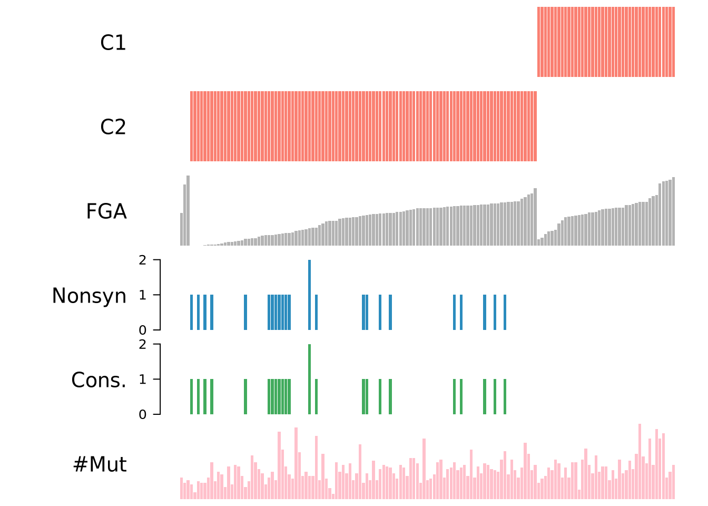
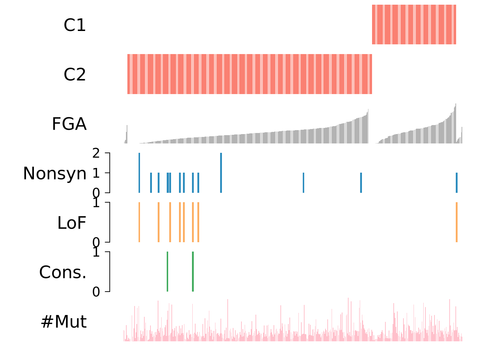

Last updated: 2026-02-12
Checks: 7 0
Knit directory: DiffDriver-PAPER/
This reproducible R Markdown analysis was created with workflowr (version 1.7.1). The Checks tab describes the reproducibility checks that were applied when the results were created. The Past versions tab lists the development history.
Great! Since the R Markdown file has been committed to the Git repository, you know the exact version of the code that produced these results.
Great job! The global environment was empty. Objects defined in the global environment can affect the analysis in your R Markdown file in unknown ways. For reproduciblity it’s best to always run the code in an empty environment.
The command set.seed(20260206) was run prior to running
the code in the R Markdown file. Setting a seed ensures that any results
that rely on randomness, e.g. subsampling or permutations, are
reproducible.
Great job! Recording the operating system, R version, and package versions is critical for reproducibility.
Nice! There were no cached chunks for this analysis, so you can be confident that you successfully produced the results during this run.
Great job! Using relative paths to the files within your workflowr project makes it easier to run your code on other machines.
Great! You are using Git for version control. Tracking code development and connecting the code version to the results is critical for reproducibility.
The results in this page were generated with repository version 451d0de. See the Past versions tab to see a history of the changes made to the R Markdown and HTML files.
Note that you need to be careful to ensure that all relevant files for
the analysis have been committed to Git prior to generating the results
(you can use wflow_publish or
wflow_git_commit). workflowr only checks the R Markdown
file, but you know if there are other scripts or data files that it
depends on. Below is the status of the Git repository when the results
were generated:
Ignored files:
Ignored: .Rhistory
Ignored: .Rproj.user/
Untracked files:
Untracked: LICENSE
Untracked: code/simulate.R
Untracked: data/realdata/
Untracked: data/tsgsimple_LUAD_fixed_63/
Untracked: output/Clinical.csv
Untracked: output/all_diffdriver_genes.txt
Untracked: output/barplot-GO-bio-age.pdf
Untracked: output/barplot-GO-bio-age.png
Untracked: output/barplot-GO-bio-ins.pdf
Untracked: output/barplot-GO-bio-ins.png
Untracked: output/barplot-GO-bio-tmb.pdf
Untracked: output/barplot-GO-bio-tmb.png
Untracked: output/barplot-KEGG-ins.pdf
Untracked: output/barplot-KEGG-tmb.pdf
Unstaged changes:
Modified: DiffDriver-PAPER.Rproj
Modified: analysis/_site.yml
Deleted: analysis/simulation_code.Rmd
Note that any generated files, e.g. HTML, png, CSS, etc., are not included in this status report because it is ok for generated content to have uncommitted changes.
These are the previous versions of the repository in which changes were
made to the R Markdown (analysis/Individual_Genes.Rmd) and
HTML (docs/Individual_Genes.html) files. If you’ve
configured a remote Git repository (see ?wflow_git_remote),
click on the hyperlinks in the table below to view the files as they
were in that past version.
| File | Version | Author | Date | Message |
|---|---|---|---|---|
| html | 9a0bb77 | Qirui Zhang | 2026-02-12 | Build site. |
| html | 24651e6 | Qirui Zhang | 2026-02-12 | Build site. |
| Rmd | 92fca54 | Qirui Zhang | 2026-02-12 | rebuild |
get_files <- function(outputdir, tumors = NULL, phenotypes = NULL) {
files <- list.files(
path = outputdir,
pattern = "_resdd\\.Rd$",
recursive = TRUE,
full.names = TRUE
)
matching_files_txt <- sub("\\.Rd$", ".txt", files)
analysis_mode <- ifelse(grepl("_sig_", basename(files)), "sig", "reg")
inner_folder_names <- basename(dirname(files))
phenotype_folder_names <- basename(dirname(dirname(files)))
tumor_names <- mapply(function(inner_name, phen) {
pattern_front <- paste0("^", phen, "_")
tmp <- sub(pattern_front, "", inner_name)
tmp <- sub("_mutations$", "", tmp)
return(tmp)
}, inner_folder_names, phenotype_folder_names)
phenos_all <- phenotype_folder_names
filedf <- data.frame(
tumor = tumor_names,
phenotype = phenos_all,
mode = analysis_mode,
file = files,
filetxt = matching_files_txt,
stringsAsFactors = FALSE
)
if (!is.null(tumors)) {
filedf <- filedf[filedf$tumor %in% tumors, ]
}
if (!is.null(phenotypes)) {
filedf <- filedf[filedf$phenotype %in% phenotypes, ]
}
rownames(filedf) <- NULL
return(filedf)
}
get_diff_table <- function(filedf, include_nonsig = TRUE){
pheno_all <- unique(filedf$phenotype)
numlist <- list()
for (p in pheno_all){
p_txtfiles <- filedf[filedf$phenotype == p, ]
numlist[[p]] <- list()
for (t in seq_len(nrow(p_txtfiles))){
txtf <- p_txtfiles[t, "filetxt"]
rdf <- p_txtfiles[t, "file"]
tumor <- p_txtfiles[t, "tumor"]
mode <- p_txtfiles[t, "mode"] # reg / sig
env <- new.env()
load(rdf, envir = env)
res_rdata <- env$res
res <- read.table(txtf, header = TRUE)
res$gene <- row.names(res)
res$mode <- mode
res$alpha <- sapply(res$gene, function(gene){
res_rdata[[gene]][["dd"]][["res.alt"]]$alpha[2]
})
res$significant <- res$dd.fdr < 0.1
if (include_nonsig) {
numlist[[p]][[ paste0(tumor, "_", mode) ]] <- res
} else {
sig_res <- res[res$dd.fdr < 0.1, ]
if (nrow(sig_res) > 0){
numlist[[p]][[ paste0(tumor, "_", mode) ]] <- sig_res
}
}
}
if (length(numlist[[p]]) == 0){
numlist[[p]] <- NULL
}
}
combined_df <- do.call(
rbind,
lapply(names(numlist), function(pheno) {
numlist.pheno <- numlist[[pheno]]
df.pheno <- do.call(rbind, lapply(names(numlist.pheno), function(tname) {
df <- numlist.pheno[[tname]]
df$tumor <- sub("_.*", "", tname)
df$mode <- sub(".*_", "", tname)
return(df)
}))
df.pheno$pheno <- pheno
return(df.pheno)
})
)
return(combined_df)
}dirs <- c(
"/dartfs/rc/lab/S/Szhao/qiruiz/diffdriver/temp/output/new_plot/immunesubtypes",
"/dartfs/rc/lab/S/Szhao/qiruiz/diffdriver/temp/output/new_plot/clinical"
)
res_list <- list()
for (dir_path in dirs) {
filedf <- get_files(outputdir = dir_path)
diff_table <- get_diff_table(filedf, include_nonsig = FALSE)
diff_TGCT_KIT <- subset(diff_table, mode == "sig" & tumor == "TGCT" & gene == "KIT")
if (nrow(diff_TGCT_KIT) > 0) {
source_name <- basename(dir_path)
diff_TGCT_KIT$source <- source_name
res_list[[source_name]] <- diff_TGCT_KIT
}
}
all_res <- do.call(rbind, res_list)
subset_res <- all_res[c("pheno", "source")]prep_pheno_mut_data_full <- function(mut, pheno) {
library(data.table)
mut <- as.data.table(mut)
pheno <- as.data.table(pheno)
if (!grepl("chr", mut$Chromosome[1], fixed = TRUE)) {
mut[ , Chromosome := paste0("chr", Chromosome)]
}
shared <- intersect(mut$SampleID, pheno$SampleID)
if (length(shared) < 10)
stop("too few samples with both phenotype and mutation data.")
mut <- mut [SampleID %in% shared]
pheno <- pheno[SampleID %in% shared]
if (anyDuplicated(pheno$SampleID)) {
pheno <- pheno[ , lapply(.SD, mean, na.rm = TRUE), by = SampleID]
}
ci <- pheno[ , .(SampleID, cidx = .I)]
list(mut = mut, pheno = pheno, ci = ci)
}
prep_mut_matrix <- function(gene_name, mut, pheno,
totalnttype = 96,
anno_dir = ".",
output_prefix = "plot",
output_dir = ".") {
library(data.table)
library(Matrix)
mut <- as.data.table(mut)
pheno_full <- as.data.table(pheno)
afileinfo <- list(
file = file.path(anno_dir,
paste0("anno", totalnttype,
"_nttypeXXX_annodata.txt")),
header = diffdriver:::aheader,
coltype = diffdriver:::acoltype,
totalntype = totalnttype)
rdata <- diffdriver:::prep_positional_data(
gene_name, afileinfo, BMRreg = NULL,
output_prefix = output_prefix,
output_dir = output_dir)
fanno <- rdata$fanno
ri <- rdata$ri
ri[ , ridx := .I]
cdata <- prep_pheno_mut_data_full(mut, pheno_full)
mut <- cdata$mut
pheno <- cdata$pheno
ci <- cdata$ci
nmutdt <- data.table(table(mut$SampleID))
setnames(nmutdt, c("SampleID", "Nmut"))
pheno <- merge(pheno, nmutdt, by = "SampleID", all.x = TRUE, sort = FALSE)
muti <- na.omit(
ci[ ri[mut,
on = c(chrom = "Chromosome",
start = "Position",
ref = "Ref",
alt = "Alt")],
on = "SampleID"])
mutmtx <- sparseMatrix(
i = muti$ridx,
j = muti$cidx,
dims = c(max(ri$ridx), max(ci$cidx)))
list(fanno = fanno, pheno = pheno, mutmtx = mutmtx)
}
plot_mut_multi <- function(gene_name,
mut, pheno,
pheno_cols = colnames(pheno)[-1],
totalnttype = 96,
anno_dir = ".",
output_prefix = "plot",
output_dir = ".",
mycolors = c("#FF3D2E", "#2b8cbe", #"#fdae61",
"#41ab5d", "pink", "#8C2DA6", "#a65628")) {
pdata <- prep_mut_matrix(gene_name, mut, pheno,
totalnttype, anno_dir,
output_prefix, output_dir)
fanno <- pdata$fanno
pheno <- pdata$pheno
mutmtx <- pdata$mutmtx
metr_mat <- rbind(
Nonsyn = Matrix::colSums(mutmtx),
# LoF = Matrix::colSums(mutmtx[fanno$functypecode8 > 0, ]),
Cons. = Matrix::colSums(mutmtx[fanno$mycons > 0, ]),
`#Mut` = pheno$Nmut
)
pheno_mat <- t(as.matrix(pheno[, pheno_cols, with = FALSE]))
rownames(pheno_mat) <- pheno_cols
df <- rbind(pheno_mat, metr_mat)
fac_C1 <- df["C1", ]
fac_C2 <- df["C2", ]
val_FGA <- df["FGA", ]
ord <- order(fac_C1, fac_C2, val_FGA, na.last = TRUE)
df <- df[, ord]
n_row <- nrow(df)
par(mfrow = c(n_row, 1), mar = c(0.5, 12, 0.5, 1))
for (i in seq_len(n_row)) {
vec <- df[i, ]
unique_vals <- unique(vec[!is.na(vec)])
current_label <- rownames(df)[i]
if (length(unique_vals) <= 2 && i <= nrow(pheno_mat)) {
barplot(rep(1, length(vec)),
col = c("white", "salmon")[as.factor(vec)],
xaxt = "n", yaxt = "n",
ylab = "", border = NA)
} else {
ylim_i <- if (rownames(df)[i] == "#Mut") {
c(0, quantile(vec, 0.99, na.rm = TRUE)[[1]])
} else NULL
barplot(vec,
col = if (i <= nrow(pheno_mat))
"grey70"
else
mycolors[i - nrow(pheno_mat) + 1],
xaxt = "n", yaxt = "n",
ylab = "",
border = NA,
ylim = ylim_i)
}
mtext(text = current_label, side = 2, line = 2.5, las = 1, cex = 1.2)
if (current_label %in% c("Nonsyn", "LoF", "Cons.")) {
max_val <- max(vec, na.rm = TRUE)
axis(side = 2, at = 0:max_val, las = 1, cex.axis = 1.2, lwd = 1, lwd.ticks = 1)
}
}
}mut_path <- "/dartfs/rc/lab/S/Szhao/qiruiz/diffdriver/tumor_specific_input/TGCT/TGCT_mutations.txt"
mut <- read.table(mut_path, header = TRUE, sep = "\t")library(data.table)
pheno_files <- list(
C1 = "/dartfs/rc/lab/S/Szhao/qiruiz/diffdriver/batch2/tumor_specific_input/TGCT/TGCT_C1.txt",
C2 = "/dartfs/rc/lab/S/Szhao/qiruiz/diffdriver/batch2/tumor_specific_input/TGCT/TGCT_C2.txt",
FGA = "/dartfs/rc/lab/S/Szhao/qiruiz/diffdriver/cbioportal_download/Fraction.Genome.Altered.txt"
)
pheno_list <- lapply(names(pheno_files), function(nm) {
dt <- fread(pheno_files[[nm]], header = TRUE, sep = "\t")
setnames(dt, old = colnames(dt)[2], new = nm)
dt
})
pheno_wide <- Reduce(function(x, y) merge(x, y, by = "SampleID", all = TRUE),
pheno_list)
pheno_cols <- names(pheno_files)
plot_mut_multi(
gene_name = "KIT",
mut = mut,
pheno = pheno_wide,
pheno_cols = pheno_cols,
anno_dir = "/dartfs/rc/lab/S/Szhao/qiruiz/diffdriver/annodir96/"
)Warning: package 'Matrix' was built under R version 4.4.3[1] "coding..."
[1] "processing ..."
[1] "for qnvars, filling in missing values ..."
[1] "for cvars (0/1 categories), filling in missing values ..."
[1] "normalizing categorical variables in annotation matrix ..."
| Version | Author | Date |
|---|---|---|
| 24651e6 | Qirui Zhang | 2026-02-12 |
plot_mut_multi <- function(gene_name,
mut, pheno,
pheno_cols = colnames(pheno)[-1],
totalnttype = 96,
anno_dir = ".",
output_prefix = "plot",
output_dir = ".",
mycolors = c("#FF3D2E", "#2b8cbe", "#fdae61",
"#41ab5d", "pink", "#8C2DA6", "#a65628")) {
pdata <- prep_mut_matrix(gene_name, mut, pheno,
totalnttype, anno_dir,
output_prefix, output_dir)
fanno <- pdata$fanno
pheno <- pdata$pheno
mutmtx <- pdata$mutmtx
metr_mat <- rbind(
Nonsyn = Matrix::colSums(mutmtx),
LoF = Matrix::colSums(mutmtx[fanno$functypecode8 > 0, ]),
Cons. = Matrix::colSums(mutmtx[fanno$mycons > 0, ]),
`#Mut` = pheno$Nmut
)
pheno_mat <- t(as.matrix(pheno[, pheno_cols, with = FALSE]))
rownames(pheno_mat) <- pheno_cols
df <- rbind(pheno_mat, metr_mat)
fac_C1 <- df["C1", ]
fac_C2 <- df["C2", ]
val_FGA <- df["FGA", ]
ord <- order(fac_C1, fac_C2, val_FGA, na.last = TRUE)
df <- df[, ord]
n_row <- nrow(df)
par(mfrow = c(n_row, 1), mar = c(0.5, 12, 0.5, 1))
target_rows <- c("Nonsyn", "LoF", "Cons.")
for (i in seq_len(n_row)) {
vec <- df[i, ]
unique_vals <- unique(vec[!is.na(vec)])
current_label <- rownames(df)[i]
if (current_label %in% target_rows) {
# 3 times width
target_w <- 3.0
s_mid <- (1.2 / target_w) - 1
s_start <- (0.7 - target_w / 2) / target_w
use_width <- target_w
use_space <- c(s_start, rep(s_mid, length(vec) - 1))
} else {
use_width <- 1
use_space <- 0.2
}
if (length(unique_vals) <= 2 && i <= nrow(pheno_mat)) {
barplot(rep(1, length(vec)),
col = c("white", "salmon")[as.factor(vec)],
xaxt = "n", yaxt = "n",
ylab = "", border = NA,
width = use_width, space = use_space)
} else {
ylim_i <- if (rownames(df)[i] == "#Mut") {
c(0, quantile(vec, 0.99, na.rm = TRUE)[[1]])
} else NULL
barplot(vec,
col = if (i <= nrow(pheno_mat))
"grey70"
else
mycolors[i - nrow(pheno_mat) + 1],
xaxt = "n", yaxt = "n",
ylab = "",
border = NA,
ylim = ylim_i,
width = use_width, space = use_space)
}
mtext(text = current_label, side = 2, line = 2.5, las = 1, cex = 1.5)
if (current_label %in% c("Nonsyn", "LoF", "Cons.")) {
max_val <- max(vec, na.rm = TRUE)
axis(side = 2, at = 0:max_val, las = 1, cex.axis = 1.75, lwd = 1, lwd.ticks = 1)
}
}
}pheno_files <- list(
C1 = "/dartfs/rc/lab/S/Szhao/qiruiz/diffdriver/batch2/tumor_specific_input/HNSC/HNSC_C1.txt",
C2 = "/dartfs/rc/lab/S/Szhao/qiruiz/diffdriver/batch2/tumor_specific_input/HNSC/HNSC_C2.txt",
FGA = "/dartfs/rc/lab/S/Szhao/qiruiz/diffdriver/cbioportal_download/Fraction.Genome.Altered.txt"
)
pheno_list <- lapply(names(pheno_files), function(nm) {
dt <- fread(pheno_files[[nm]], header = TRUE, sep = "\t")
setnames(dt, old = colnames(dt)[2], new = nm)
dt
})
pheno_wide <- Reduce(function(x, y) merge(x, y, by = "SampleID", all = TRUE),
pheno_list)
pheno_cols <- names(pheno_files)mut_path <- "/dartfs/rc/lab/S/Szhao/qiruiz/diffdriver/tumor_specific_input/HNSC/HNSC_mutations.txt"
mut <- read.table(mut_path, header = TRUE, sep = "\t")
plot_mut_multi(
gene_name = "HLA-B",
mut = mut,
pheno = pheno_wide,
pheno_cols = pheno_cols,
anno_dir = "/dartfs/rc/lab/S/Szhao/qiruiz/diffdriver/temp/annodir96"
)[1] "coding..."
[1] "processing ..."
[1] "for qnvars, filling in missing values ..."
[1] "for cvars (0/1 categories), filling in missing values ..."
[1] "normalizing categorical variables in annotation matrix ..."
| Version | Author | Date |
|---|---|---|
| 24651e6 | Qirui Zhang | 2026-02-12 |
R version 4.4.2 (2024-10-31)
Platform: x86_64-conda-linux-gnu
Running under: Ubuntu 24.04.1 LTS
Matrix products: default
BLAS/LAPACK: /dartfs-hpc/rc/home/p/f0070pp/.conda/envs/diffdriver/lib/libopenblasp-r0.3.29.so; LAPACK version 3.12.0
locale:
[1] LC_CTYPE=en_US.UTF-8 LC_NUMERIC=C
[3] LC_TIME=en_US.UTF-8 LC_COLLATE=en_US.UTF-8
[5] LC_MONETARY=en_US.UTF-8 LC_MESSAGES=en_US.UTF-8
[7] LC_PAPER=en_US.UTF-8 LC_NAME=C
[9] LC_ADDRESS=C LC_TELEPHONE=C
[11] LC_MEASUREMENT=en_US.UTF-8 LC_IDENTIFICATION=C
time zone: Etc/UTC
tzcode source: system (glibc)
attached base packages:
[1] stats graphics grDevices utils datasets methods base
other attached packages:
[1] Matrix_1.7-3 data.table_1.17.4 workflowr_1.7.1
loaded via a namespace (and not attached):
[1] jsonlite_2.0.0 compiler_4.4.2 promises_1.3.3 Rcpp_1.0.14
[5] stringr_1.5.1 git2r_0.36.2 callr_3.7.6 later_1.4.2
[9] jquerylib_0.1.4 yaml_2.3.10 fastmap_1.2.0 lattice_0.22-7
[13] R6_2.6.1 knitr_1.50 tibble_3.2.1 rprojroot_2.0.4
[17] bslib_0.9.0 pillar_1.10.2 diffdriver_0.1.6 rlang_1.1.6
[21] cachem_1.1.0 stringi_1.8.7 httpuv_1.6.16 xfun_0.52
[25] getPass_0.2-4 fs_1.6.6 sass_0.4.10 cli_3.6.5
[29] magrittr_2.0.3 ps_1.9.1 digest_0.6.37 grid_4.4.2
[33] processx_3.8.6 rstudioapi_0.17.1 lifecycle_1.0.4 vctrs_0.6.5
[37] evaluate_1.0.3 glue_1.8.0 whisker_0.4.1 rmarkdown_2.29
[41] httr_1.4.7 tools_4.4.2 pkgconfig_2.0.3 htmltools_0.5.8.1